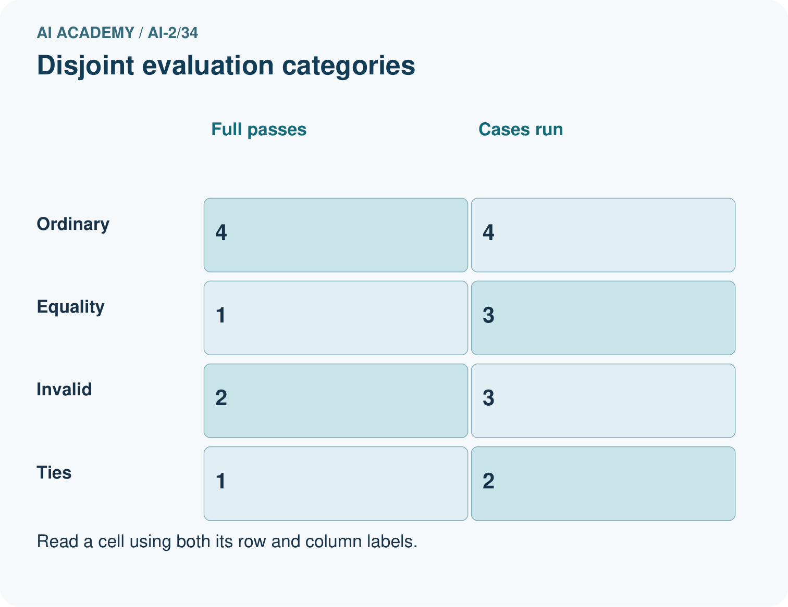
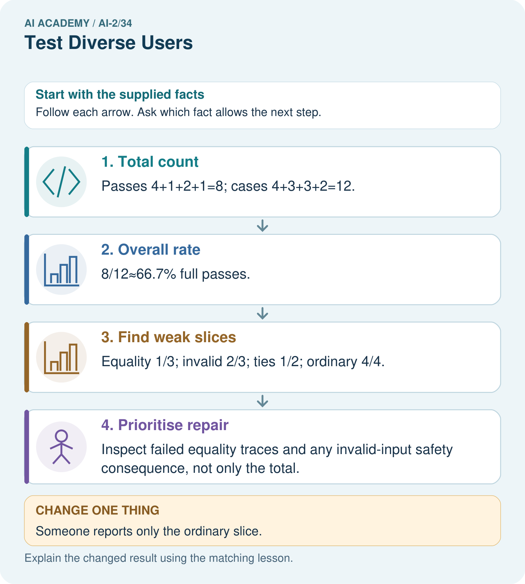

AI Academy · Level 2 · Grade 7 · Week 34 · Workbook
Test Diverse Users
Learn to understand, design, build, test and explain AI systems responsibly.
Project: Transparent Book Recommender
Workbook · 1 of 20
Recall and choose your starting point
Try the recall before opening notes. Then use a different colour or a labelled second line to correct your explanation.
Build the Recommender
Without opening the old lesson, explain one key idea from Build the Recommender. Give an example and a mistake that the idea helps you avoid.
Permissions and Human Review
Without opening the old lesson, explain one key idea from Permissions and Human Review. Give an example and a mistake that the idea helps you avoid.
Prompt Experiments
Without opening the old lesson, explain one key idea from Prompt Experiments. Give an example and a mistake that the idea helps you avoid.
Workbook · 2 of 20
Practise with fading help
Use W2: Plan coverage for Evaluating varied cases. Record the answer once; the lesson and workbook refer to the same attempt.
| Given inputs | Procedure I chose | Middle steps | Result and check |
|---|---|---|---|
Workbook · 3 of 20
Individual reasoning check
Use the worked case for Evaluating varied cases. Proposed explanation: “A successful run proves the conclusion”. Decide whether this explanation is supported. Point to the step or supplied fact that decides; explain your repair if needed.
Workbook · 4 of 20
Independent transfer case
Independent case: Evaluate independently
Given ordinary 3/3, boundary 1/2, invalid 2/2 and tie 0/1, compute overall results and prioritize issues.
Attempt this case before feedback. Record any help. Earlier examples below are further practice; a case already practised with feedback cannot establish fresh transfer.
Workbook · 5 of 20
Your learning target
The recommender succeeds on 9/10 mystery requests and 2/5 poetry requests. Compute total and separate rates. A team reports only 11/15. Explain what that hides.
Workbook · 6 of 20
Solve the given case
A recommender satisfies 5/6 adventure requests and 3/6 poetry requests.
Compare and investigate.
Show your trace, calculation or evidence
Workbook · 7 of 20
Check a changed case
A recommender serves 6 of 6 easy-book requests but 1 of 4 advanced-book requests. Report both results and identify the next test priority.
My independent answer and reason
Week 34 Test and reflect
Workbook · 8 of 20
Design a revealing test
Create a changed input, boundary case or missing-information case. Write the expected answer or safe response before testing.
| Test record | My evidence |
|---|---|
| Changed input or condition | |
| Expected answer or fallback | |
| Observed result | |
| Why the result occurred |
Workbook · 9 of 20
Project checkpoint
Use the same test record across ordinary, boundary, missing-data, and access-needs cases.
The project change and evidence I will keep
Workbook · 10 of 20
Self check
I can explain the mechanism. I can show evidence. I can handle a changed case. I can name a limit. Mark each as not yet, with help or independently, and attach supporting work.
Teacher review ____________________ Next step ____________________
Workbook · 11 of 20
Transfer practice from the original programme
The recommender succeeds on 9/10 mystery requests and 2/5 poetry requests. Compute total and separate rates. A team reports only 11/15. Explain what that hides.
Record support used: none, hint or teacher explanation.
Workbook · 12 of 20
W1 Read denominators
A report says 8 of 10 tests pass, including 0 of 2 invalid-input cases. What is the important weakness?
Workbook · 13 of 20
W2 Plan coverage
Name five distinct categories for the chooser evaluation.
Workbook · 14 of 20
W3 Repair reporting
A learner drops two failed cases and reports 8/8. What should be restored?
Workbook · 15 of 20
W4 Evaluate independently
Given ordinary 3/3, boundary 1/2, invalid 2/2 and tie 0/1, compute overall results and prioritize issues.
Workbook · 16 of 20
W5 Protect final evidence
You fix the tie bug using the final tie case. What should the next evaluation report say?
Workbook · 17 of 20
Feedback, return check and learning record
| Evidence | My record |
|---|---|
| Worked alone / hint / model | |
| First step I repaired and why | |
| New case checked later; date and result | |
| What I can now explain without notes | |
| One remaining question |
Revisit this idea with your teacher after a delay. Familiarity is different from explaining and using it on a changed case.
Workbook · 18 of 20
Pictorial case practice: Test Diverse Users
A fictional recommender is tested on distinct ordinary, equality, invalid-input and tie cases.
Recorded full passes: ordinary 4/4; equality 1/3; invalid 2/3; ties 1/2.
Categories are disjoint and every case was run on the same frozen version with the same contract.


Can these records establish performance for different user groups?
Support used: alone / hint / worked example. This record is practice evidence.
Project connection: Build a recommender evaluation matrix with routine, boundary, missing, invalid and tie cases, then add separately planned user-condition coverage.
Workbook · 19 of 20
Project portfolio milestone
Project: Transparent Book Recommender
Current milestone: Present and defend. Demonstrate the system, explain one failure and justify the next improvement with evidence.
Build a recommender evaluation matrix with routine, boundary, missing, invalid and tie cases, then add separately planned user-condition coverage.
| Evidence to keep | My record |
|---|---|
| This week’s input and deciding step | |
| Prediction and actual result (or labelled paper trace) | |
| One change since the previous checkpoint and why | |
| One error or limit and the next test |
Workbook · 20 of 20
Supported practice and learning evidence
Use this supported practice once, in the browser or on paper. Keep the reserved independent assessment for a separate first attempt before teacher feedback.
A fictional recommender is tested on distinct ordinary, equality, invalid-input and tie cases.
Practice 1: explain the deciding evidence
Which labelled step matches this detail? Inspect failed equality traces and any invalid-input safety consequence, not only the total.
1. Prioritise repair
2. Total count
3. Find weak slices
4. Overall rate
Hint if needed: Read the steps in the pictorial case. Match the supplied detail to the stage that performs or records it.
After your attempt, compare with the supported explanation: Prioritise repair Inspect failed equality traces and any invalid-input safety consequence, not only the total. Varied tests expose behavior an ordinary demonstration misses. The overall result combines disjoint cases once each; overlapping labels would require unique-case accounting. Prioritisation also depends on consequences: a malformed input that triggers an unauthorised action can be more serious than a harmless tie-order failure. Retain each failed case and its expected output.
Practice 2: explain the deciding evidence
Changed-case practice: Someone reports only the ordinary slice. Which conclusion is supported by the supplied facts?
1. This one example guarantees correct results for every future input.
2. The claim becomes 4/4 on ordinary cases, not 100% across all tests.
3. We can decide the result without examining the changed input or the procedure.
Hint if needed: Use the changed condition and the deciding step in the pictorial trace. The answer must say what follows from those facts.
After your attempt, compare with the supported explanation: The claim becomes 4/4 on ordinary cases, not 100% across all tests. Eight nonordinary cases and their failures have been omitted.
Repair a missing building block
Review Build the Recommender (ai-2/33). Goal: Implement a deterministic recommender. Short practice: Explain why B does not win after D is excluded even though it has fewer pages.. Return to this week and explain what you changed.
Review Permissions and Human Review (ai-2/31). Goal: Explain the mechanism and terminology of least privilege and tool scopes. Short practice: Which proposal is allowed, and why is an authorised object alone insufficient?. Return to this week and explain what you changed.
Review Prompt Experiments (ai-2/28). Goal: Explain the mechanism and terminology of controlled prompt experiments. Short practice: Name the case P passes and Q fails, and explain why it matters.. Return to this week and explain what you changed.
Predict, run and debug
The browser lab lets you edit the supported Python examples already included in this lesson. Predict first, run, inspect the actual output or error, change one input, then run again. Keep code, predictions, actual results and a reasoned revision together. On paper, label your result as a trace rather than an execution.
Keep your completed work
Use Download completed work in the hosted lesson to export your answers, reflections, practice feedback and code-run evidence. Open the HTML copy to read or print it. Drafts stay in this browser when storage is available; clear drafts on a shared device.